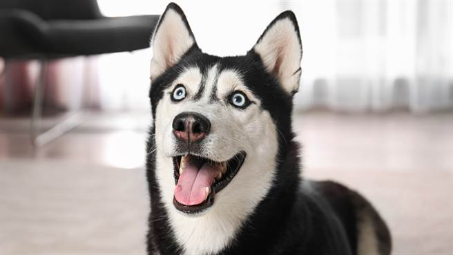

歡迎來到狗狗品種介紹的主頁
此照片為哈士奇~
哈士奇是北方地區雪橇型狗的總稱，他們的快速拉動的風格與其他雪橇犬不同。 他們是由速度最快的雪橇犬不斷交配的品種。 相比之下，阿拉斯加雪橇犬是“最大和最有力的”雪橇犬，常被用於較重的承載。 哈士奇被用於雪橇犬拉車比賽。
此照片為哈士奇~
哈士奇是北方地區雪橇型狗的總稱，他們的快速拉動的風格與其他雪橇犬不同。 他們是由速度最快的雪橇犬不斷交配的品種。 相比之下，阿拉斯加雪橇犬是“最大和最有力的”雪橇犬，常被用於較重的承載。 哈士奇被用於雪橇犬拉車比賽。
柯基是牧羊犬中的一個品種，原產於英國威爾斯。 當前獲承認的有兩個不同品種：卡提根(Cardigan) 和潘布魯克(Pembroke)。 歷史上一般認為潘布魯克源自於10世紀左右佛蘭德紡織者引進的狗,而卡提根則是源於諾爾斯定居者帶來的狗,特別是其共同祖先瑞典牧羊犬。

黃金獵犬(英語:Golden Retriever)是一種作為用來在配合射擊狩獵而培養出來的中大型獵犬。 「尋回犬」這個名字是指該品種因性格穩重加上咬合力溫柔，叼咬物體時能做到不將其損壞，適合用來幫助獵人尋回被擊斃的獵物（通常是禽類）。

邊境牧羊犬(英語:Border Collie)是一種原產自蘇格蘭的牧羊犬，主要協助農場放牧，懂得用眼神控制羊群，是最普遍的蘇格蘭牧羊犬犬種。 邊境牧羊犬以精力旺盛，體格精實且容易學習雜技運動而聞名，可是有時候太過興奮會產生一些神經質。 他們被學界認為是最聰明的犬種。